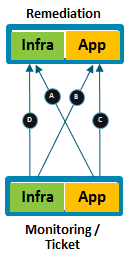
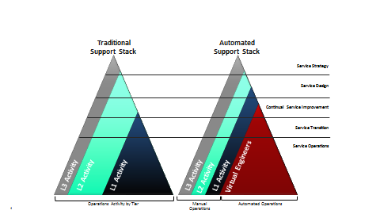
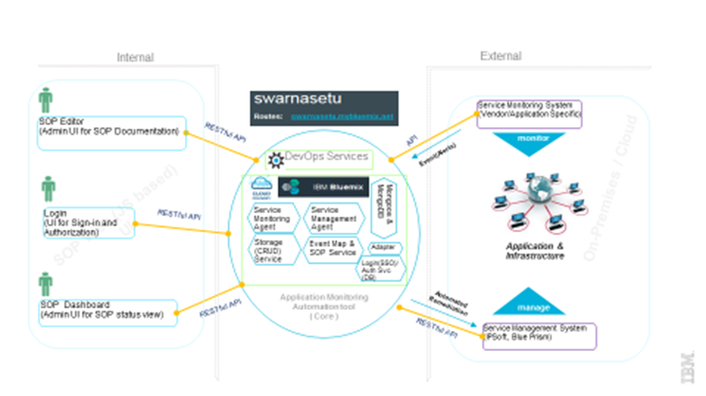

Dynamic Monitoring Automation - Technology
Swarnasetu (aka Golden Bridge) is an Application Monitoring Automation solution aimed at automating the remedial actions for all incidents and alerts that are triggered for issues occurring in any application where this solution has been implemented in projects across GBS.

It is a part of the automation program for linking Application Monitoring System with Infrastructure Optimization. This technology connects tools of application monitoring (e.g. SAP –Solution Manager, IBM Tivoli Monitor) with infrastructure management tools (e.g. IPSoft, Blue Prism). It is a key capability in terms of completing the DevOps "circle of life" for AMS and ITS business. Our unique and innovative bridging technology leverages:
- Real Time view for Standard Operation Procedure(SOP)
- Secure SOP from outside world
- Integration with Service Management System (e.g. IPSoft, Blue Prism)
- Integration with Service Monitoring System (e.g. SAP _solution Manager, IBM Tivoli Monitoring)
- Bridging Systems for automation of SOP
- Visibility of current integration flow
- Administrating operational for SOP access virtual engineers
Current Business Challenges
In an enterprise IT System, alerts/incidents/tickets are being created on a daily basis for issues reported from various System Applications and Infrastructure. In order to remediate the problems some unstructured tasks need to be executed manually. In the absence of a proper tool to manage the incidents and ticket handling process and undefined /unstructured way of defining task for ticket incident remediation, a lot of manual effort is wasted on analysis, co-ordination and closure of incidents from multiple systems. Due to the lack of a centralized tool, with analytical capability the current incident handling process leads to considerable wastage of effort and resources.
How Does The Technology Work ?
SOPs (Standard Operating Procedures) are used in many regulated industries to ensure that a variety of critical business processes, procedures, and policies are performed properly. IT industries are also defining SOP’s as problem remediation steps for specific incidents/alerts/tickets raised by System’s Application and Infrastructure. SOPs are detailed descriptions of the steps to be performed and they become a key focal point during inspections and audits by regulating bodies and authorities.
Swarnasetu is meant for managing SOP’s, leverage bridging mechanism between Service Monitoring System to Service Management System for automatically executing the remediation to help track and manage any organization's SOPs and monitor the bridging technology.
Swarnasetu is a single platform solution that provides everything you need to manage SOPs, automate SOPs to be executed dynamically, quickly and easily – using underline bridging mechanism between App/Infra Monitoring System and App/Infra Managing System.
The following are just a few of the benefits and capabilities gained with Swarnasetu.
- Swarnasetu Portal – A Web-based portal for :
- Easy access by authenticated/authorized virtual engineers from any location (cloud/on-premis)
- Welcome virtual engineers
- View Product overview and version
- SOP Editor – A Web-based portal for :
- Complete documentation of all SOPs for a single, up-to-date working procedures
- Registering Client, Account, Application for which SOP’s are documented
- Ability to Search SOP based on Application for their holistic view
- Ability to associate a predefined automation with an SOP
- SOP reports to verify on compliance
- Easy control of documenting SOP procedures and workflows
- Golden Bridge - A light-weight bridging technology for :
- Adapter framework for easy integration of any Service Monitoring System to get event (alerts) information.
- Ability to integrate Service Management System to establish the bridge for events remediation of associated SOP.
- Ability to apply cognitive solution for right SOP to be automated.
- Dashboard - A light-weight web-based portal with:
- Ability for quick assessment of the current status with complete drill-down for more detail on any SOP.
- Ability to view with real-time event processing logs
- Ability to extract event processing logs for given time interval
- One-click dashboard report download
- Greater value - Better ROI
- Be assured of being compliant while reducing industry costs and improving industries incident/tickets remediation cycle time, productivity, and business effectiveness.
- This automation solution aims at reducing the ticket volume for AMS projects by automating and reducing the manual workload. Many/Specific L1, L2 and L3 support activities are targeted to be automated.
- Continuous Application Monitoring essential for Proactive IT Services Management
- “Detect Problem before it happens” (E.g. Low Disk Free Space, MQ Queue length beyond threshold, Mandatory Service stopped etc.)
- Diverse Application Monitoring Technologies prevalent in business with no / minimal Automation in Problem Remediation
- Infrastructure Support Engineers execute Remedial Actions (SOP*s) based on Application Monitoring Events
- Custom Batch Processes (job-aids) but no end-to-end Workflow Automation
- Dependency on Support Engineers (availability, ability)
- Reduction in Manual Workload

Technology View
